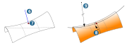
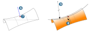
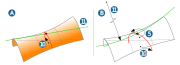
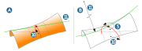

Local curvature
 | Get information about local curvature attributes of a face or a curve. → |
Get information about local curvature attributes of a face or a curve.
Calculate the direction with which a curvature equal to zero is reached, hence the examined face is ‘planar’.
Face / Curve
Face: Select a face for the analysis  .
.
Curve: Select a boundary of the selected face or a curve located on the face  . A position on the curve is used to determine a point on the face from which the attributes are derived. The curve is only used for ‘guidance’.
. A position on the curve is used to determine a point on the face from which the attributes are derived. The curve is only used for ‘guidance’.
U and V: Displays the Iso parameters of the analyzed position. Enter the required position for the analysis between (0.0) and (1.1).
Angle: Displays the analysis direction. Enter an angle for determining the curvature values for a required analysis direction  .
.
Target radius: Displays the analyzed radius. Enter the value for an analysis starting from a specified radius.
The entry of a Target radius or Angle only affects the following analyzes:
U radius
V radius
Angle between 1st deri. U and principal direction 1
Angle between 1st deri. U and principal direction 2
When an Angle is entered, a permitted U radius or V radius is determined in this direction. When a Target radius is entered, a possible angle Angle between 1st deri. U and principal direction 1 or Angle between 1st deri. U and principal direction 2 is determined as the direction information. A permitted radius in principal direction 1 or principal direction 2 is determined by copying one of these values to Angle.
Curve only
Curve: Select a curve for the analysis  .
.
Choose Parameter to display the analyzed position. Enter the required position for the analysis between (0) and (1).
Values
Information about the local attributes of the selected position of the entity is listed.
- Point
Coordinates of the current analyzed position
 . The coordinates may be generated as a point. Click the line and choose the Create point command on the context menu.
. The coordinates may be generated as a point. Click the line and choose the Create point command on the context menu.- Normal (vector)
Normal vector of the current analyzed position of the entity
 .
.- Tangent
Tangent at the analyzed position (Curve only).
- Binormal
The binormal vector is the unit vector that stands vertically in the space on an osculating plane of a curve (Curve only).
- Curvature radius
The curvature is the inverse of the radius. If a radius remains constant, the curvature is also constant. If the curvature converges to 0, the radius is ‘infinite’. If the radius converges to 0, a very large curvature exists.
Principal radius1 and Principal radius 2 are the inverses of the principal curvatures

 . Principal curvatures are the minimum and maximum curvature values from all directions (0° to 360°) at the analyzed position.
. Principal curvatures are the minimum and maximum curvature values from all directions (0° to 360°) at the analyzed position.U radius and V radius

 are the inverses of the curvatures in the direction of the U and V isoparametric lines of the face for an Angle of 0° at the analyzed position
are the inverses of the curvatures in the direction of the U and V isoparametric lines of the face for an Angle of 0° at the analyzed position  .
.The global values are the minimum radii that are determined from the analysis for the complete entity.
- Angle
Angle between tangents of the first derivatives for U or V and various curvature directions.
Configuration
Zoom invariant: When the view is zoomed, the workplane retains its displayed size.
Size: Workplane display size for Zoom invariant.
In the options under Show and Create, choose which analysis results should be visualized graphically and which ones should be generated as an entity. These include:
For face and curve on face:
Tripod for directions from the U and V isoparametric lines further ‘rotated’ by the Angle and the normal at the analysed position
A point on an entity, the direction of the normal, and the UV directions can be generated individually as required.
Curve for tangent of the curve on face that may have been selected at the analyzed position
Circular arcs as principal radii (light grey, dark grey) at the analyzed position
Circular arcs as U and V radii (red, light green) at the analyzed position and Angle
Points at the minimum positive and negative normal curvature radii with label (mauve)
Circular arcs as radii along the tangent of the curve that may have been selected in addition to the face
Points at the minimum positive and negative normal curvature radii of the curve that may have been selected in addition to the face
Tripod for second derivatives for indicating the pitch progression (yellow, violet)
For individual curve:
Curves as directions
A point on an entity, the direction of the normal, and the UV directions can be generated individually as required.
Circular arc for curvature radius
Point for minimum curvature radius
Monopod for second derivatives for indicating the pitch progression (yellow, violet)
Enable the → option for more in-depth mathematical analyses. This should not usually be necessary for CAM programming and should be left to specialists.
In the Search line at the top of the tree structure, search for text within this structure. Enter the text to be searched for. Suitable results are displayed as the user is typing. Confirm the entry by pressing the ENTER key. The search history will be saved temporarily. Separate text fragments with spaces to display several different contents at the same time. The search is case insensitive.
Clear: Remove the search string again. To do this, right-click the line to display the context menu: Select the command there.

Application
Other analysis options such as → are designed for spherical (tool) geometries. When the curvatures are analyzed, no direction information is displayed. This is also not necessary here as the same radius exists for each direction of the sphere.
This type of analysis is not really suitable for barrel cutters, for example, in the case of low-angle swarf cutting, as two radii of the tool with significantly different sizes are to be considered.
For selectable positions, it is possible to determine whether collision-free machining is possible for the following parameters:
Barrel radius
Machining direction
Lead angle
The following procedure may be suggested for an analysis:
For the analysis, enable the display of Principal radius 1 and Principal radius 2.
Display the global minimum radius. A position is generated.
Snap this position with the analysis tripod.
Set the Angle according to the planned machining direction, for example, set the value 0° for machining along the U or V isoparametric line.
Check whether the displayed radii suit the planned tool. Check whether a more suitable radius (of another tool) could result in better machining. If a radius that is too small is chosen, the benefits offered by machining with a barrel cutter will be lost. If a radius that is too large is chosen, this will provoke a collision between the tool and the contour to be machined.
Change the angle to find a direction for the inclination of the tool (lead angle) that provides a radius that suits the planned tool.
Alternatively, change the planned machining direction. In other words, instead of machining in the direction of an isoparametric line, machine in another direction in which the radius of the tool can ‘nestle’ against the contour to be machined without any danger of collision.